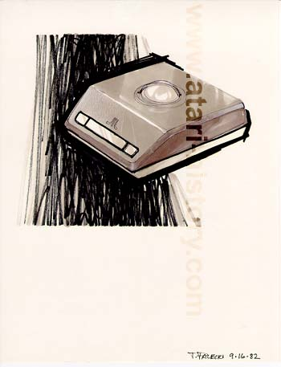
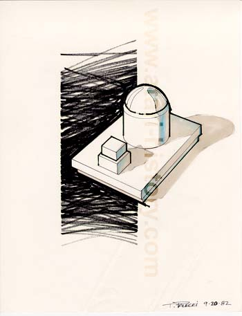
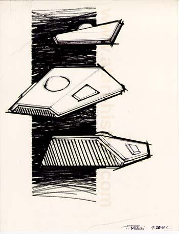
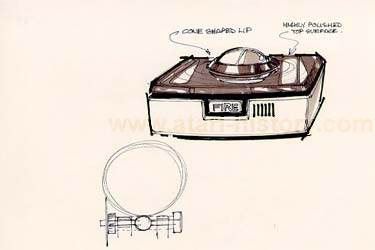

Another of the square shape concepts with fire buttons
towards the front under the Atari logo.

This one looks more like a robot then a trakball, quite
an interesting design though.

No, don't worry its not an Imperial Star Destroyer, just a very
interesting wedge design, not bad either.

This one kind of looks like the Wico controller which came out
a short while after the release of the Atari Trakballs.
The Atari Museum staff hopes you've enjoyed this peak into the past at some of the "Might Have Been" designs of the Atari home version of the Trakball. All of the designs shown were drawn by Tom Palecki, formerly of Atari's Industrial Design group. He now runs his own design company called Pear Design in California.